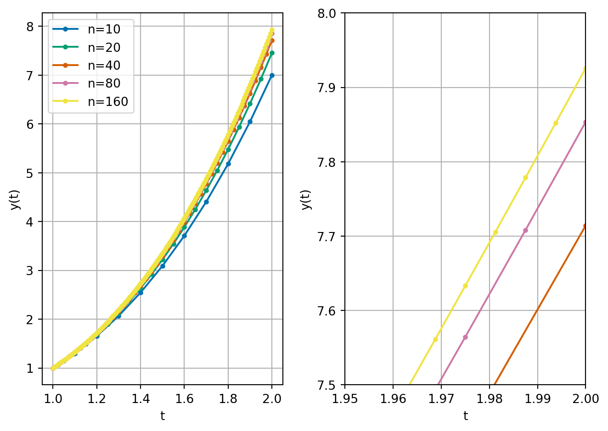
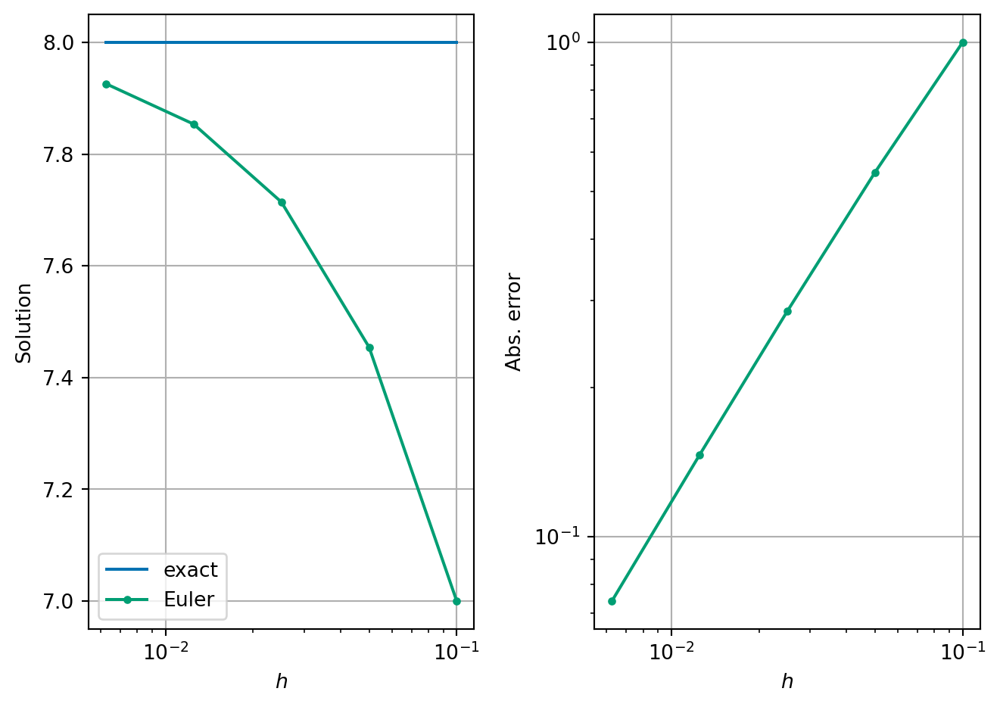
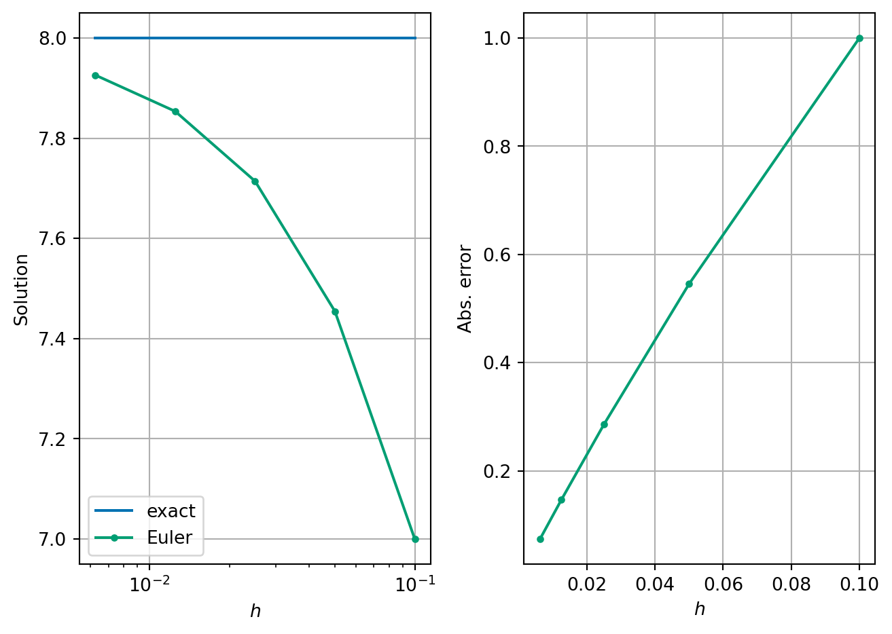
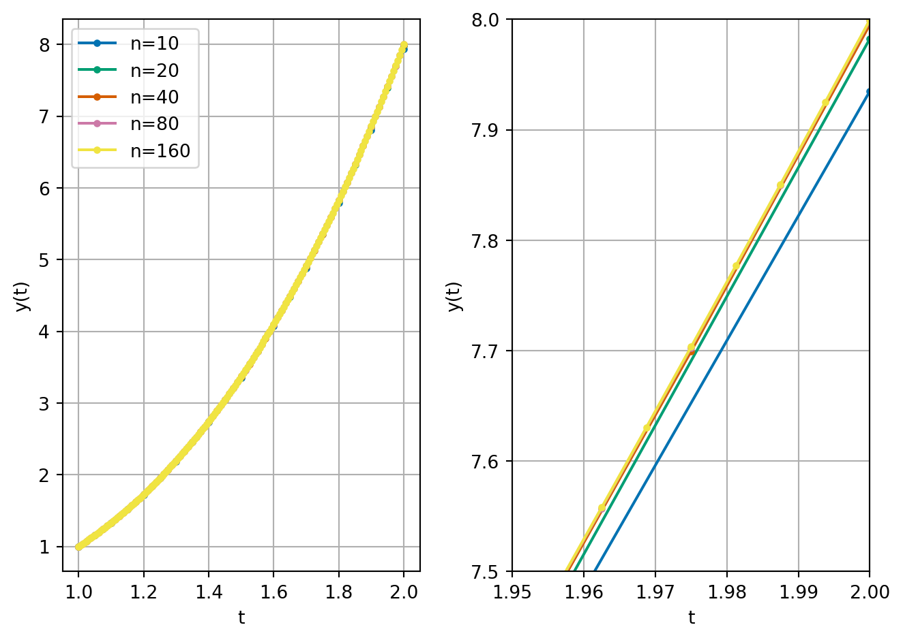
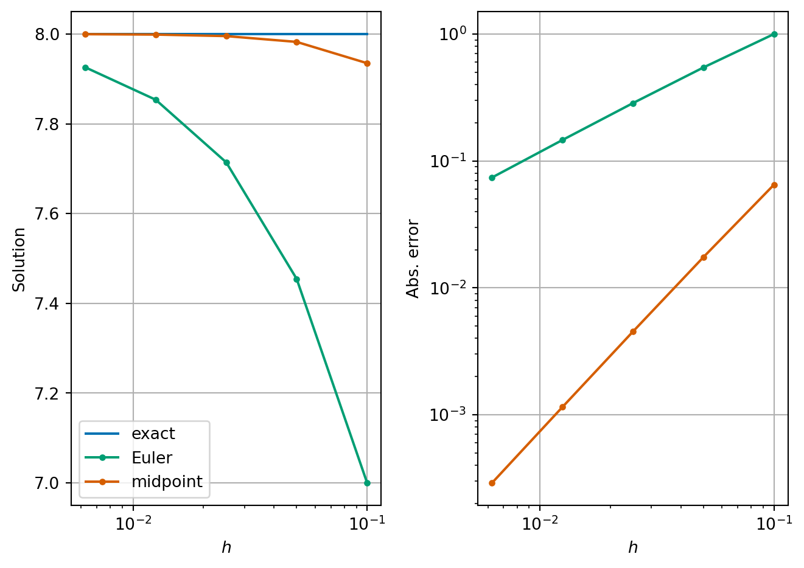
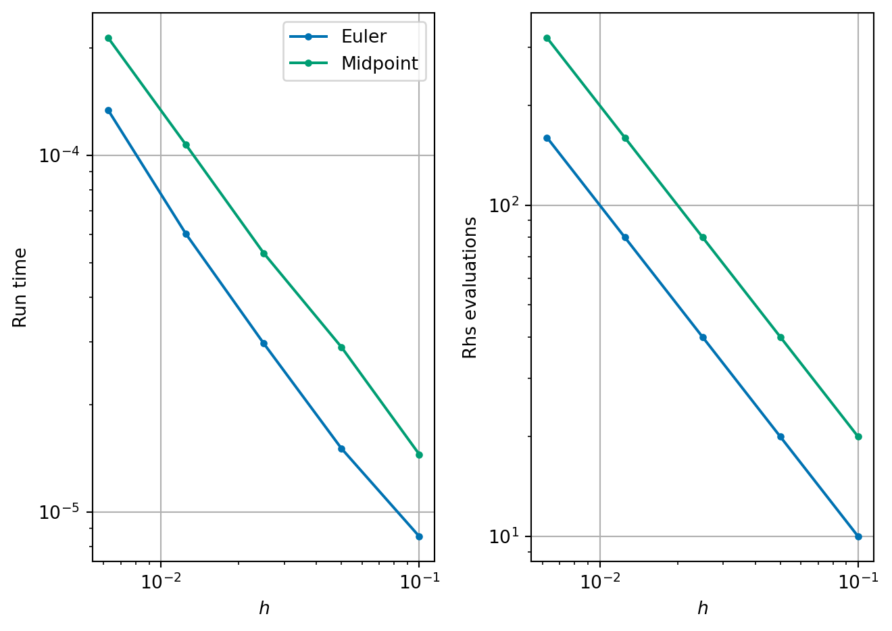
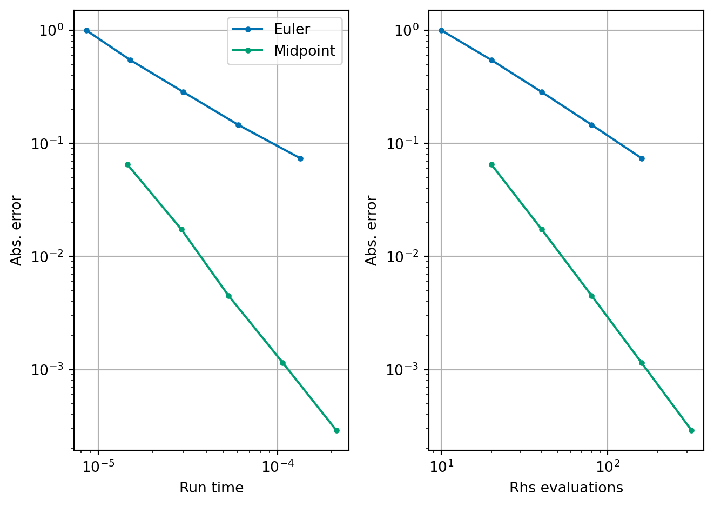

3 Analysis of errors and systems of equations
3.1 Exact derivatives and exact solutions
In a small number of cases, it is possible to solve differential equations exactly. That is to write down a simple expression for the function which satisfies both the differential equation and its initial condition. This is rare and is the main reason why we use numerical methods. However, the special cases where we can find exact solutions are useful for testing our numerical methods.
Example 3.1 Consider the function \(y(t) = t^3\).
We can find the derivative of \(y(t)\): \[\begin{align*} y'(t) & = \lim_{h\to 0} \frac{y(t + h) - y(t)}{h} \\ & = \lim_{h \to 0} \frac{(t + h)^3 - t^3}{h} \\ & = \lim_{h \to 0} \frac{t^3 + 3 t^2 h + 3 t h^2 + h^3 - t^3}{h} \\ & = \lim_{h \to 0} \frac{3 t^2 h + 3 t h^2 + h^3}{h} \\ & = \lim_{h \to 0} {3 t^2 + 3 t h + h^2} \\ & = 3 t^2. \end{align*}\]
By working backwards, we can make up our own differential equation that has \(y(t)\) as a known solution. When \(y(t) = t^3\), we can compute that \[ y'(t) = 3 t^2 = \frac{3 y(t)}{t}. \] Hence, we know the solution to the following equation: \[\begin{equation} \label{eq:diff-eq} y'(t) = \frac{3 y(t)}{t} \quad \text{subject to} \quad y(1) = 1. \end{equation}\] If we solve this differential equation for \(t\) between \(1\) and \(2\), say, then we know that the exact answer when \(t=2\) is \(y(2) = 8\).
Note here that we start from \(t=1\) to avoid \(t=0\).
We will use this differential equation where we know the exact solution to test Euler’s method. Recall that for a differential equation given by:
\[ y'(t) = f(t, y(t)) \quad\text{subject to the initial condition}\quad y(t_0) = y_0. \]
Euler’s method is given by:
- Set initial values \(t^{(0)}\) and \(y^{(0)}\) from the initial condition.
- Loop over all time steps, until the final time \(T\), updating using the formula: \[\begin{align*} y^{(i+1)} &= y^{(i)} + h f(t^{(i)}, y^{(i)}) \\ t^{(i+1)} &= t^{(i)} + h. \end{align*}\]
Exercise 3.1 Compute two time steps of Euler’s method to approximate the solution of \(\eqref{eq:diff-eq}\) at time \(T=2\). What is the error between your computed solution and the exact solution?
We can also implement Euler’s method in code:

We can see that as we increase the number of steps \(n\) (reduce the time step \(h\)), our solutions become better and better. We can also compute these values using the absolute error \[ \text{absolute error} = |y^{(n)} - y(2)|, \] where \(y^{(n)}\) is the solution at the final time step.
| n | h | Solution | Abs. error | ratio | |
|---|---|---|---|---|---|
| 0 | 10 | \(1.00000\times 10^{-1}\) | 7.000000 | \(1.00000\times 10^{0}\) | --- |
| 1 | 20 | \(5.00000\times 10^{-2}\) | 7.454545 | \(5.45455\times 10^{-1}\) | 0.545455 |
| 2 | 40 | \(2.50000\times 10^{-2}\) | 7.714286 | \(2.85714\times 10^{-1}\) | 0.523810 |
| 3 | 80 | \(1.25000\times 10^{-2}\) | 7.853659 | \(1.46341\times 10^{-1}\) | 0.512195 |
| 4 | 160 | \(6.25000\times 10^{-3}\) | 7.925926 | \(7.40741\times 10^{-2}\) | 0.506173 |
This table shows that indeed the absolute error is decreasing as \(h \to 0\). We also compute the ratio between different errors. We see that each time \(h\) is halved, that the error is approximately halved. In other words, the error is approximately proportional to \(h\).
Exercise 3.2 What might we expect the computed solution to be if we halved \(h\) one more time?
Something interesting happens when we plot \(h\) against the absolute error for Euler’s method - we see that the errors all fall on a straight line. Perhaps this is not too strange since we think that the error is approximately proportional to step size, so this line should be straight either on a linear or log scale.

Remark 3.1. Using log scales is really important when considering variables like \(h\) or error. Contrast the above nice plot, with nice evenly spread data points, with these linear scaled plots:

Exercise 3.3 Why don’t we use a log scale for solution too?
Remark 3.2. It is important to note that in this lecture, we are measuring the error at the final time point as a measure of how good our method is. This is a global error that measures the accumulation of local errors which happen at each time step. Other possible global errors include finding the maximum or average error over all time steps.
Sometimes we also care more about other, more physical based properties of our solution. For example, in long-time simulations scientists often want to ensure that the laws of thermodynamics are implemented exactly – i.e. that energy is conserved and that entropy increases.
3.2 Big \(O\) notation
TODO examples from the rest of the module. check this bit with Haiko
When considering algorithm complexity, you have already seen big \(O\) notation. For example:
- Gaussian elimination requires \(O(n^3)\) operations when \(n\) is large,
- Backward substitution requires \(O(n^2)\) operations when \(n\) is large.
For large values of \(n\) the highest powers of \(n\) are the most significant. For smaller values of \(h\), it is the lowest powers of \(h\) that are the most significant. When \(h = 0.001\), \(h\) is much bigger than \(h^2\), for example.
We can make use of the big \(O\) notation in either case. Formally, we say that \(f(h) = O(h^p)\) as \(h \to 0\) if there exists a constant \(C > 0\) such that \(|f(h)| < C |h|^p\) for all small enough \(h\).
Example 3.2 Let \(f(x) = 2x^2 + 4x^3 + x^5 + 2x^6\),
- then \(f(x) = O(x^6)\) as \(x \to \infty\),
- and \(f(x) = O(x^2)\) as \(x \to 0\).
In this notation, we can say that the error in Euler’s method is \(O(h)\).
3.3 The midpoint method – an improvement in Euler’s method
We want to derive a new improved method for solving differential equations. We aim to produce a method with a smaller error for a similar amount of work per time step.
Let’s assume that the error in Euler’s method is exactly proportional to \(h\). In this case, if we halve \(h\), we halve the error. In this derivation, we will start from the initial condition and want to approximate the solution after a time \(h\). We will label the exact solution at \(t=h\) by \(y_{\text{exact}}\).
- Then, we continue by computing one time step from \(y^{(0)}\) with time step \(h\) - we call this solution \(z_1\). We label error between the exact solution and \(z_1\) by \(E_1\).
- We then take two time steps from \(y^{(0)}\) now with time step \(h/2\) - we call this solution \(z_2\). We label the error between the exact solution and \(z_2\) by \(E_2\). Since in this derivation, the error is exactly proportional to the time step, we can see that \(E_2 = \frac{E_1}{2}\).
In equations, we can express these relations as: \[\begin{align*} z_1 - y_{\text{exact}} & = E_1 \\ z_2 - y_{\text{exact}} & = E_2 = \frac{E_1}{2}. \end{align*}\] Subtracting twice the second equation from the first equation gives: \[ y_{\text{exact}} = 2 z_2 - z_1. \] If our assumption that the error in Euler’s method is exactly proportional to \(h\), combining \(z_1\) and \(z_2\) would give a solution with zero error! However, our assumption is in fact approximately true as we found in Table 3.1. So we might hope that we have found a method with smaller error than Euler’s method with three times the cost of Euler’s method (i.e. 3 Euler steps per one time step of this method - one to find \(z_1\) and two to find \(z_2\)).
We can even formulate this method more compactly. Writing our new scheme in full, for a general time step \(i\), we have for the one step approach: \[\begin{align*} z_1 & = y^{(i)} + h f(t^{(i)}, y^{(i)}), \end{align*}\] and for the two step approach: \[\begin{align*} k & = y^{(i)} + \frac{h}{2} f(t^{(i)}, y^{(i)}) \\ m & = t^{(i)} + \frac{h}{2} \\ z_2 & = k + \frac{h}{2} f(m, k). \end{align*}\] Combining \(z_1\) and \(z_2\) as suggested above we see: \[\begin{align*} y^{(i+1)} & = 2 z_2 - z_1 \\ & = 2 \left(k + \frac{h}{2} f(m, k)\right) - \left(y^{(i)} + h f(t^{(i)}, y^{(i)})\right) && \text{(substitute for $z_1$ and $z_2$)} \\ & = 2 k - y^{(i)} + h \left( f(m, k) - f(t^{(i)}, y^{(i)}) \right) && \text{(rearrange)} \\ & = 2 \left(y^{(i)} + \frac{h}{2} f(t^{(i)}, y^{(i)}) \right) - y^{(i)} + h \left( f(m, k) - f(t^{(i)}, y^{(i)}) \right) && \text{(substitute for $k$)} \\ & = 2 y^{(i)} - y^{(i)} + h \left( f(t^{(i)}, y^{(i)}) + f(m, k) - f(t^{(i)}, y^{(i)}) \right) \\ & = y^{(i)} + h f(m, k). \end{align*}\]
The midpoint method for solving differential equations is then as follows:
- Initialise starting values \(t^{(0)}\) and \(y^{(0)}\).
- Loop over all time steps, until the final time, updating using the formulae: \[\begin{align*} k & = y^{(i)} + \frac{h}{2} f(t^{(i)}, y^{(i)}) \\ m & = t^{(i)} + \frac{h}{2} \\ y^{(i+1)} & = y^{(i)} + h f(m, k) \\ t^{(i+1)} & = t^{(i)} + h. \end{align*}\]
Remark 3.3. In the end the cost of this formulation of the midpoint method is twice as large as Euler’s method.
Example 3.3 Take two steps of the midpoint rule to approximate the solution of \[ y'(t) = -y(t)^2 \quad\text{subject to the initial condition} \quad y(0) = 2, \] for \(0 \le t \le 2\).
In this example we have:
- \(n=2\)
- \(t_0 = 0\)
- \(y_0 = 2\)
- \(T = 2\)
- \(h = (2 - 0)/2 = 1.0\)
- \(f(t, y) = -y^2\).
We start with \(t^{(0)} = 0\) and \(y^{(0)} = 2\).
Step 1: \[\begin{align*} k & = y^{(0)} + \frac{h}{2} f(t^{(0)}, y^{(0)}) \\ & = 2 + \frac{1.0}{2} \times (-(2)^2) \\ & = 2 + 0.5 \times -4 = 0.0 \\ m & = t^{(0)} + \frac{h}{2} \\ & = 0 + \frac{1.0}{2} = 0.5 \\ y^{(1)} & = y^{(0)} + h f(m, k) \\ & = 2 + 1.0 (-(0.0)^2) \\ & = 2 + 1.0 \times -0.0 = 2.0 \\ t^{(1)} & = t^{(0)} + h \\ & = 0 + 1.0 = 1.0. \end{align*}\]
Step 2: \[\begin{align*} k & = y^{(1)} + \frac{h}{2} f(t^{(1)}, y^{(1)}) \\ & = 2.0 + \frac{1.0}{2} \times (-(2.0)^2) \\ & = 2.0 + 0.5 \times -4.0 = 0.0 \\ m & = t^{(1)} + \frac{h}{2} \\ & = 1.0 + \frac{1.0}{2} = 1.5 \\ y^{(2)} & = y^{(1)} + h f(m, k) \\ & = 2.0 + 1.0 (-(0.0)^2) \\ & = 2.0 + 1.0 \times -0.0 = 2.0 \\ t^{(2)} & = t^{(1)} + h \\ & = 1.0 + 1.0 = 2.0. \end{align*}\]
3.3.1 Numerical results
We can also implement the method in code and explore how the error changes as we change the number of steps. For this test we use the same test as we did for Euler’s method \(\eqref{eq:diff-eq}\).

We already see that we are much closer to the solution.
Let’s compute the errors:
| n | h | Solution | Abs. error | ratio | |
|---|---|---|---|---|---|
| 0 | 10 | \(1.00000\times 10^{-1}\) | 7.935060 | \(6.49403\times 10^{-2}\) | --- |
| 1 | 20 | \(5.00000\times 10^{-2}\) | 7.982538 | \(1.74619\times 10^{-2}\) | 0.268892 |
| 2 | 40 | \(2.50000\times 10^{-2}\) | 7.995475 | \(4.52485\times 10^{-3}\) | 0.259127 |
| 3 | 80 | \(1.25000\times 10^{-2}\) | 7.998849 | \(1.15145\times 10^{-3}\) | 0.254473 |
| 4 | 160 | \(6.25000\times 10^{-3}\) | 7.999710 | \(2.90410\times 10^{-4}\) | 0.252212 |
We now see that the error reduces by a quarter each time we reduce \(h\) by half. This means that the error is approximately proportional to \(h^2\), or equivalently, we can say that the error is \(O(h^2)\) as \(h \to 0\).
This is a significant improvement on Euler’s method. We say that the midpoint method is second order, whereas Euler’s method is just first order.
We can see the significant reduction in error by plotting the errors for both methods:

Our interesting phenomenon of the straight line on the log-log plot of \(h\) and absolute error has happened again for the midpoint method. The difference now is that the line is much steeper. In a log-log plot, straight lines correspond to power laws (i.e., \(C h^p\)) and the slope indicates the exponent in the power law (\(p\)). Indeed if \(\text{error}(h) \approx C h^p\) then \[ \log(\text{error}(h)) \approx \log C + p \log h. \]
We are seeing that our method behaves as if the error is proportional to \(h^2\).
3.4 Balancing cost and accuracy
At first glance, it may seem that we now have a trade-off between reducing the error but at a higher cost by using the midpoint method. We can test this more explicitly. We repeat the experiments but use two additional measures of cost: the run time and the number of right-hand side (\(f\)) evaluations. When working with real-world systems, evaluating the right-hand side function often forms the main computational cost of both Euler’s method and the midpoint method.
| n | h | Solution | Abs. error | Run time | Rhs evals | Run time ratio | |
|---|---|---|---|---|---|---|---|
| 0 | 10 | \(1.00000\times 10^{-1}\) | 7.000000 | \(1.00000\times 10^{0}\) | \(8.54900\times 10^{-6}\) | 10 | --- |
| 1 | 20 | \(5.00000\times 10^{-2}\) | 7.454545 | \(5.45455\times 10^{-1}\) | \(1.50742\times 10^{-5}\) | 20 | 1.763271 |
| 2 | 40 | \(2.50000\times 10^{-2}\) | 7.714286 | \(2.85714\times 10^{-1}\) | \(2.96946\times 10^{-5}\) | 40 | 1.969896 |
| 3 | 80 | \(1.25000\times 10^{-2}\) | 7.853659 | \(1.46341\times 10^{-1}\) | \(6.01806\times 10^{-5}\) | 80 | 2.026651 |
| 4 | 160 | \(6.25000\times 10^{-3}\) | 7.925926 | \(7.40741\times 10^{-2}\) | \(1.33722\times 10^{-4}\) | 160 | 2.222013 |
| n | h | Solution | Abs. error | Run time | Rhs evals | Run time ratio | |
|---|---|---|---|---|---|---|---|
| 0 | 10 | \(1.00000\times 10^{-1}\) | 7.935060 | \(6.49403\times 10^{-2}\) | \(1.45172\times 10^{-5}\) | 20 | --- |
| 1 | 20 | \(5.00000\times 10^{-2}\) | 7.982538 | \(1.74619\times 10^{-2}\) | \(2.89822\times 10^{-5}\) | 40 | 1.996404 |
| 2 | 40 | \(2.50000\times 10^{-2}\) | 7.995475 | \(4.52485\times 10^{-3}\) | \(5.31594\times 10^{-5}\) | 80 | 1.834209 |
| 3 | 80 | \(1.25000\times 10^{-2}\) | 7.998849 | \(1.15145\times 10^{-3}\) | \(1.06960\times 10^{-4}\) | 160 | 2.012064 |
| 4 | 160 | \(6.25000\times 10^{-3}\) | 7.999710 | \(2.90410\times 10^{-4}\) | \(2.13185\times 10^{-4}\) | 320 | 1.993125 |

However, we can make this plot another way by plotting the cost against the error.

We see now that whichever way you want to measure cost, you see that for a fixed cost the midpoint method gives a lower error. Although the midpoint method costs about twice as much per time step, its higher order accuracy means we need far fewer steps to reach a desired accuracy. So the best way to think is that if you have a budget of, say, right-hand side evaluations, \(N\), you can afford for your computations, then in general, you should choose to use the midpoint method with \(n=N/2\) time steps in order to minimise the error.
4 Summary
We have found different ways to computationally measure the quality of an algorithm to solve differential equations. We have used one way of measuring errors to derive an improvement to Euler’s method called the midpoint method. We see that Euler’s method is a first order accurate method and the midpoint method is second order accurate. The computational cost of the midpoint method is twice as high as Euler’s method, but the higher order accuracy outweighs the higher computational cost in general.